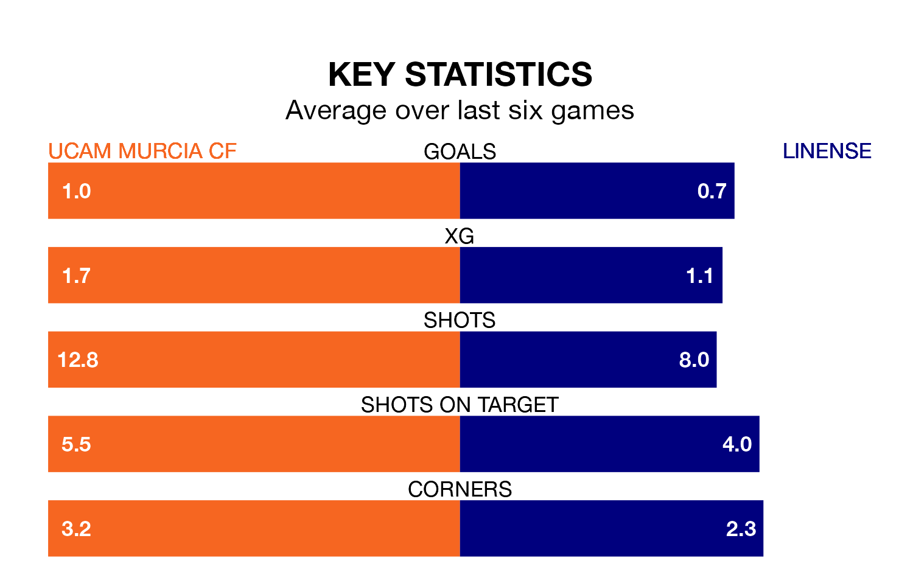

Linense come to Estadio de La Condomina to play UCAM Murcia CF on Sunday in poor form, having collected just four points from their last six games.
The visitors have won one and drawn one of their last six fixtures, while UCAM Murcia have three wins and a draw.
In the last 10 years, UCAM Murcia and Linense have played each other on 13 occasions. UCAM Murcia won six of them, Linense three, and they drew four times.
On average, UCAM Murcia scored 1.1 goals and Linense 0.7 in those matches.
Their last meeting was on November 26, when UCAM Murcia won 2-0 away.
With 28 goals in 29 games so far this season, UCAM Murcia are scoring at the league's average rate with 1.0 goals per game. But they are conceding at an average rate too, letting in 29 goals at a rate of 1.0 per game.
Linense are also average scorers, with 1.0 goal per game. They have also conceded 1.0 goal per game.
The home side are eighth in the table after 29 games, of which they have won 11 and drawn seven, earning 40 points.
The visitors are one place behind UCAM Murcia in ninth, with 10 wins and eight draws putting them on 38 points.
UCAM Murcia's last match was on March 31, a 1-0 win against Cádiz B.
Linense beat Vélez 3-1 last time out, also on March 31, with Aridane Jesús Santana Cabrera on the scoresheet.
Updated: 16:41 (UTC), 04/04/24